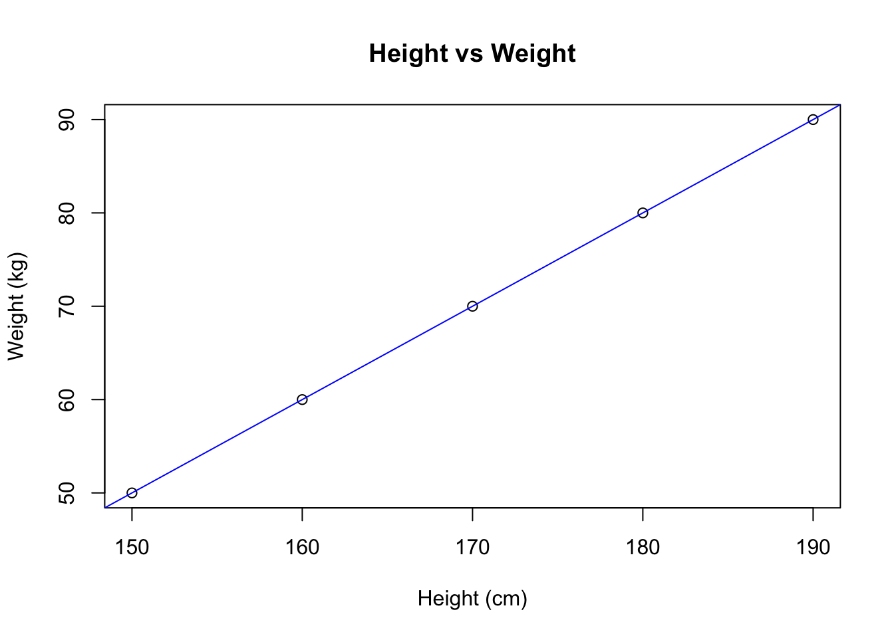
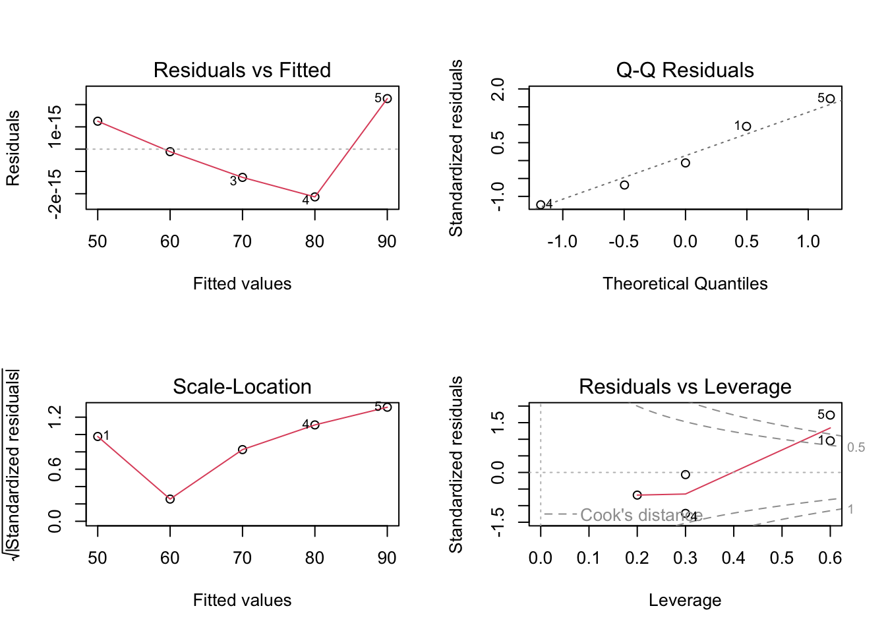
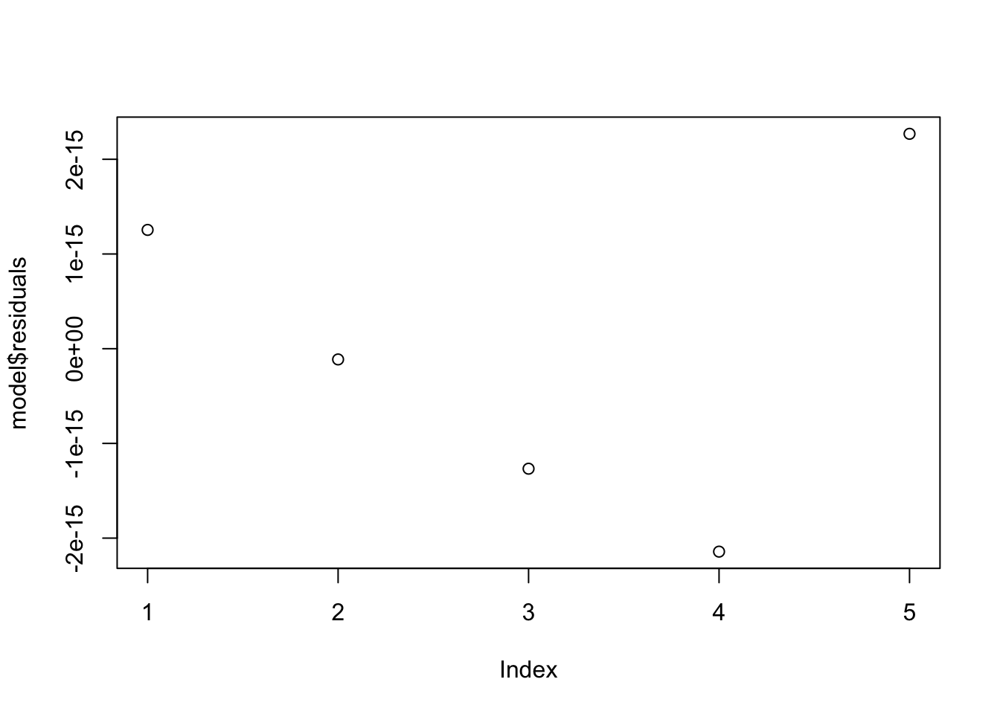

Code
mydata <- data.frame(
Height = c(150, 160, 170, 180, 190),
Weight = c(50, 60, 70, 80, 90)
)Understanding and quantifying the relationships in data is paramount in statistics. Methods like correlation and regression provide researchers with invaluable tools for analyzing interactions between variables.
Correlation focuses on measuring the degree of linear association between two continuous variables. Conversely, regression analysis extends this concept by allowing the prediction of one variable based on the known values of another or multiple independent variables. Researchers often utilize these methodologies not only within academic settings but also across industries including healthcare, finance, and social sciences, where such analyses guide decision-making processes.
In cases where the variables in question are categorical, statisticians rely on tests such as the Chi-Square test. The Chi-Square test assesses if distributions of categorical variables differ from one another, which is essential when determining relationships in categorical datasets. Thus, relationship testing via these methodologies allows for comprehensive data analysis and interpretation, which in turn aids in developing conclusions and recommendations.
In this section, a detailed exploration of correlation begins.
Covariance is a foundational statistic representing how two variables change together. If both variables tend to increase together, the covariance is positive. If one increases while the other decreases, the covariance is negative. However, covariance is not standardized, making it challenging to interpret across different datasets. For example, if height and weight are analyzed, a covariance of 30 might indicate a certain relationship between the two variables, but without context, it is difficult to ascertain the strength of that connection.
The formal mathematical representation of covariance between variables \(X\) and \(Y\) is given by:
\[ Cov(X,Y) = \frac{1}{n-1} \sum_{i=1}^{n} (X_i - \bar{X})(Y_i - \bar{Y}) \]
Where \(n\) is the number of data points, \(X_i\) and \(Y_i\) are the individual sample points of X and Y, and \(\bar{X}\) and \(\bar{Y}\) are the means of X and Y, respectively.
Correlation transforms the covariance into a standardized metric, the correlation coefficient, which ranges between –1 to +1:
The most commonly used correlation coefficient is Pearson’s Correlation (r), suitable for continuous variables that are normally distributed:
\[ r = \frac{Cov(X,Y)}{SD(X) \cdot SD(Y)} \]
Where \(SD(X)\) and \(SD(Y)\) are the standard deviations of X and Y.
Other coefficients, such as Spearman’s Rank Correlation and Kendall’s Tau, are used for ordinal data or when assumptions of normality are violated. Spearman’s correlation assesses monotonic relationships, which allows for discovering relationships that aren’t necessarily linear.
Before running the following R code examples, we define a sample dataset:
mydata <- data.frame(
Height = c(150, 160, 170, 180, 190),
Weight = c(50, 60, 70, 80, 90)
)Utilizing RKWard, the process of correlating variables becomes straightforward. For instance, researchers often analyze anthropometric measurements such as height and weight. By entering the appropriate data into RKWard and generating a correlation analysis, researchers can obtain:
Steps to perform correlation in RKWard include:
Input the dataset.
Utilize the correlation function, such as:
::: {.cell}
cor(mydata$Height, mydata$Weight)::: {.cell-output .cell-output-stdout}
[1] 1::: :::
Interpret the computed correlation coefficient.
Visualizations play an essential role in understanding correlations. Scatter plots allow one to visually assess relationships between variables. In RKWard, users can generate scatter plots using the following code:
plot(mydata$Height, mydata$Weight, main="Height vs Weight", xlab="Height (cm)", ylab="Weight (kg)")
abline(lm(Weight ~ Height, data=mydata), col="blue")
This scatter plot displays individual data points and the fitted regression line, helping to illustrate how height correlates with weight visually. By adding a regression line, one can further investigate if the relationship appears linear and the strength of that association.
In expanding the utility of correlation analysis, we delve into its uses and potential pitfalls.
As previously mentioned, while correlation can indicate a relationship between variables, it does not infer causation. A classic example is the correlation observed between ice cream sales and drowning incidents. Though both variables may increase during summer months, one does not cause the other; rather, a third variable, temperature, influences both.
Researchers must ensure clarity when interpreting data, often utilizing controlled experiments to establish causal links. Notably, techniques such as Randomized Controlled Trials (RCTs) are crucial in establishing causation by controlling for confounding factors.
Correlation is widely utilized across myriad fields:
To illustrate the diversity of correlation’s applications, here are some field-specific examples:
| Field | Example |
|---|---|
| Psychology | Assessing the relationship between stress levels and academic performance. |
| Economics | Evaluating the correlation between unemployment rates and inflation. |
| Sports Analytics | Analyzing the relationship between player statistics and game outcomes. |
| Environmental Science | Examining the correlation between pollution levels and public health metrics. |
In all these instances, correlations can guide further research and interventions designed to enhance outcomes based on insights gathered.
The concept of regression analysis is rooted in its power to model and predict outcomes based on independent variables.
The primary form of regression is simple linear regression, which describes the relationship between a single independent variable (predictor) and a dependent variable:
\[ y = mx + c \]
Here, \(m\) signifies the slope of the line, indicating the change in \(y\) for every one-unit increase in \(x\). The constant \(c\) represents the y-intercept, where the line intersects the y-axis.
Example: A researcher finds the regression equation \(y = 3x + 2\). This indicates that for every additional hour studied, the test score (\(y\)) is expected to increase by 3 points.
RKWard simplifies the process of conducting regression analysis through intuitive functionalities. The steps include:
Inputting Data: Users need to ensure datasets are correctly formatted.
Fitting the Model: Using the lm() function in R:
::: {.cell}
model <- lm(Weight ~ Height, data=mydata):::
This fits a linear regression model predicting Weight from Height.
Analyzing Model Output: The summary() function provides crucial statistics related to fits, such as coefficients and R² values:
::: {.cell}
summary(model)::: {.cell-output .cell-output-stderr}
Warning in summary.lm(model): essentially perfect fit: summary may be
unreliable:::
::: {.cell-output .cell-output-stdout}
Call:
lm(formula = Weight ~ Height, data = mydata)
Residuals:
1 2 3 4 5
1.270e-14 -1.296e-14 -6.454e-15 9.733e-16 5.736e-15
Coefficients:
Estimate Std. Error t value Pr(>|t|)
(Intercept) -1.000e+02 6.265e-14 -1.596e+15 <2e-16 ***
Height 1.000e+00 3.673e-16 2.723e+15 <2e-16 ***
---
Signif. codes: 0 '***' 0.001 '**' 0.01 '*' 0.05 '.' 0.1 ' ' 1
Residual standard error: 1.161e-14 on 3 degrees of freedom
Multiple R-squared: 1, Adjusted R-squared: 1
F-statistic: 7.413e+30 on 1 and 3 DF, p-value: < 2.2e-16::: :::
Interpreting Coefficients: The coefficient for Height tells you how much Weight is expected to change for each one-unit increase in Height, holding everything else constant.
To assess how well the regression model fits the data, several statistics are gathered during the analysis:
The essential fundamentals of regression analysis also include validation of core assumptions:
Common pitfalls to avoid in regression analysis include:
Visualizing the fitted model along with residual plots, such as:
par(mfrow=c(2,2))
plot(model)
allows one to assess these assumptions logically and adjust the approach as needed.
In advanced regression analyses, there lies a wealth of diagnostic tests and methodologies to identify the robustness of the model trained.
Residuals, the differences between observed and predicted values, are vital to understanding model performance. Analyzing these residuals helps identify patterns or systematic errors in the model’s predictions.
The ideal residual plot should show no discernible pattern, confirming the appropriateness of linear regression. These residuals can be plotted using:
plot(model$residuals)
To validate linear regression assumptions, several tests are essential:
Each of these tests provides critical insights into whether a linear regression model can be relied upon or if adjustments are necessary.
Beyond the foundational elements discussed, advanced regression topics include:
Multiple Regression: An extension of simple linear regression where multiple independent variables are considered. The regression equation takes the form:
\[ y = b_0 + b_1x_1 + b_2x_2 + \cdots + b_nx_n + \epsilon \]
Interaction Terms: Inclusion of interaction terms in regression models can capture the combined effect of two or more predictors. This is essential in deeper analysis when relationships are not purely linear.
Polynomial Regression: When data exhibit a non-linear relationship, polynomial regression may be used to model these patterns adequately.
The insights from ANOVA significantly complement correlation and regression analyses.
ANOVA Types:
| Source | SS | df | MS | F |
|---|---|---|---|---|
| Between | 461.64 | 3 | 153.88 | 8.27 |
| Within | 167.42 | 9 | 18.60 | |
| Total | 629.06 | 12 |
Chi-Square Applications:
For instance, a Chi-Square test might explore whether gender relates to the choice of academic major, providing insight into educational trends within populations.
Non-Parametric Equivalents:
These tests come into play when data does not meet the normality assumption necessary for traditional parametric tests. Key non-parametric tests include:
| Test | Description |
|---|---|
| Mann–Whitney | Tests differences between two independent groups. |
| Kruskal–Wallis | An extension of the Mann-Whitney test for three or more groups. |
| Wilcoxon Signed-Rank | Compares two related samples. |
Logistic Regression: As trends in data become more complex, predicting outcomes between two categories is frequently required. For example, in financial sectors, logistic regression may predict default rates based on categorical input variables:
\[ p = \frac{1}{1 + e^{-(a + bx)}} \]
where \(p\) is the probability of the outcome, determined by the independent variables included.
Ultimately, understanding how to quantify and interpret the relationships between variables through correlation, regression, and Chi-Square tests is fundamental for robust statistical analysis.
| Concept | Description |
|---|---|
| Correlation | Measures association (e.g., Pearson, Spearman, Kendall) |
| Regression | Predicts a dependent variable from one or more independent variables |
| Chi-Square | Tests associations between categorical variables |
| Model Assumptions | Include normality, linearity, homoscedasticity, independence |
| Diagnostic Tools | Residual plots, QQ plots, Durbin-Watson, NCV test |
Before running the following R code examples, we define a sample dataset:
mydata <- data.frame(
Height = c(150, 160, 170, 180, 190),
Weight = c(50, 60, 70, 80, 90)
)